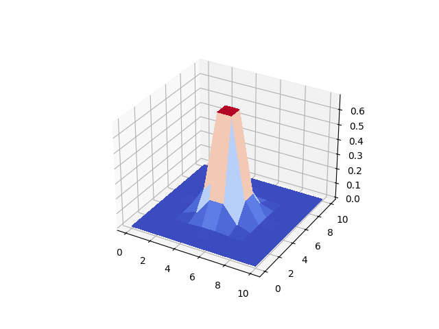

Konumuz kesit seviyeleri (level sets). Bu alanda Sethian ve Osher otorite sayılıyor, 80'li yıllarda yayınladıkları makale ve kitaplarda konuyu etraflıca işlediler.
Elimizde bir eğri var diyelim (altta resimde \(t=0\) anındaki)
ve bu "arayüz (interface)'' ya da duvar, bu eğri hareket ediyor. İlerliyor. Bu ilerlemenin kendi normali (yani eğrinin her noktasındaki teğetine dik) yönünde olduğunu düşünelim. Bu ilerleme şeklini biz empoze ediyoruz, sonra formüllerin buna göre nasıl şekillendiğini göreceğiz. Bu ilerleme sonunda mesela \(t=0\)'da görülen şekilden \(t=1\)'deki şekle gelinmiş olacak. En ideal şartlarda hızın hiçbir noktada değişmediğini düşünebiliriz, yani hız sabit. O zaman birim zamanda sabit hızda (diyelim o da 1), mesafe 1 katedilmiş olur.
Eğrinin nasıl tarif edildiği anahtar. Eğriyi, o eğri üzerindeki belli yerlerde noktalar üzerinden mi temsil etsem? Ki o her nokta bir bilinmeyen / değişkenle genel formüle dahil edilse? O noktaların her birinde ayrı bir normal diferansiyel denklem (ordinary differential eqution) olabilirdi, o denklemi takip ederek bir sonraki noktaya gidebilirdim, vs.
Fakat kesit seviyeleri böyle işlemiyor. Hatta ilk akla gelen (gayet doğal)parçacıklı üstteki fikir sayısal hesaplarda çabucak bazı engellere tosluyor. Mesela üstteki resimdeki örnek idealdi dedik, parçacıklar \(t=1\)'da biraz yayılırlar, çok değil, ama çok yayılıyor da olabilirlerdi. Ya da ters yönde eğime göre noktalar aynı noktada toplanabilirdi, bu sayısal hesabı iyice bozardı çünkü noktalar üst üste binerdi, aradaki farkları doğru dürüst hesaplayamazdık.
Peki o zaman kesit seviyeleri bu problemleri nasıl çözüyor? Ondan önce kesit seviyesi nedir? Kesit seviyesi bir ana fonksiyona göre tarif edilir, mesela \(\Phi(x,y)\)'nin kesit seviyesi. Bu seviye \(\Phi(x,y) = 0\) olabilir, yani \(\Phi(x,y)\)'nin sıfırdaki kesit seviyesine bakabiliriz.
Kesitleri üç boyutlu yüzey üzerinde yapılan yatay kesitler olarak düşünebiliriz. Üç boyutlu fonksiyonun o yatay düzlem üzerindeki hali, yansıması bu kesittir. Birden fazla kesiti farklı kontur renkleri ile gösterebilirdik. Mesela yeryüzeyi \(x,y\) kordinatlarındaki yükseklik (dağlar) verisini konturlar olarak göstermek klasik bir topografi tekniğidir. Yapay bir veri üzerinde görelim, \(x,y\) ve yükseklik deyince üç boyutlu bir fonksiyondan bahsediyoruz, onun ayrıksal halini mesela 10x10 boyutunda bir matris ile gösterebiliriz. Formül
\[\Phi(x,y) = \exp \left( -2 \log(2) ((x-x_0)^2 + (y-y_0)^2) / s^2 \right) \]
from mpl_toolkits.mplot3d import Axes3D
from matplotlib import cm
def Phi(x, y):
s = 1.5; x1 = 5.0; y1 = 5.0
g = np.exp( -2 *np.log(2) * ((x-x1)**2+(y-y1)**2) / s**2)
return g
D = 10
x = np.linspace(0,10,D)
y = np.linspace(0,10,D)
xx,yy = np.meshgrid(x,y)
zz = Phi(xx,yy)
fig = plt.figure()
ax = fig.gca(projection='3d')
surf = ax.plot_surface(xx, yy, zz, cmap=cm.coolwarm,
linewidth=0, antialiased=False)
plt.savefig('2_11_02.png')
plt.figure()
contours = [0.1, 0.2, 0.3]
cs=plt.contour(xx,yy,zz,contours)
plt.clabel(cs,inline=1,fontsize=9)
plt.savefig('2_11_03.png')
Tam ortasına bir tepe koyduk, bir analitik fonksiyon kulladik ama bunu rahatlık amacıyla yaptık, elle bazı değerleri matriste gerekli yerlere direk koysak aynı sonucu elde ederdik. Üstteki matrisin değerlerini basarsak mesela şuna benzer,
np.set_printoptions(precision=3,suppress=True)
print (zz)[[0. 0. 0. 0. 0. 0. 0. 0. 0. 0. ]
[0. 0. 0. 0.002 0.005 0.005 0.002 0. 0. 0. ]
[0. 0. 0.005 0.026 0.062 0.062 0.026 0.005 0. 0. ]
[0. 0.002 0.026 0.146 0.343 0.343 0.146 0.026 0.002 0. ]
[0. 0.005 0.062 0.343 0.807 0.807 0.343 0.062 0.005 0. ]
[0. 0.005 0.062 0.343 0.807 0.807 0.343 0.062 0.005 0. ]
[0. 0.002 0.026 0.146 0.343 0.343 0.146 0.026 0.002 0. ]
[0. 0. 0.005 0.026 0.062 0.062 0.026 0.005 0. 0. ]
[0. 0. 0. 0.002 0.005 0.005 0.002 0. 0. 0. ]
[0. 0. 0. 0. 0. 0. 0. 0. 0. 0. ]]Kontur grafiğinde üç tane konturu gösterdik, contours değişkeni listesinde tanımlı.
Derse dönelim. Yani kesit seviyeleri bir eğriyi dolaylı (implicitely) tanımlamış oluyor. İki boyutlu bir eğriyi bir sürü nokta üzerinden tanımlamak yerine, üç boyutlu bir yüzeyin bir kesit üzerindeki yansıması üzerinden tanımlıyoruz, yani \(\Phi(x,y) = 0\) gibi. Yani bir eğri, \(\Phi(x,y) = 0\) denklemini çözen \(x,y\) değerleri oluyor.
Basit bir örnek üzerinde görürsek, mesela \(\Phi(x,y) = x^2 + y^2\). Bu fonksiyonun kesit seviyelerini nasıl alırım? \(\Phi\)'yi bir sabite eşitleyerek bu seviyeleri elde edebilirim, \(\Phi(x,y) = x^2 + y^2 = c\). \(c\) pozitif olduğunda elde edilen sonuçlar çember olacaktır tabii, bu formül klasik, ünlü bir formül.
Üç boyutta \(z=\Phi(x,y)\) \(x,y,z\) kordinatında bir yüzeydir, bir kap şekli, onu \(z=c\) düzlemi ile kesersek o düzleme yansıyan eğri kesit seviyesi, bir çember. Onu \(x,y\) düzlemine indirirsek orada da bir çember görürüz.

Kesit seviyelerin önemli bir avantajı üç boyuttaki tek fonksiyonu manipüle etmeye izin vermesi, bu rahat, tek \(\Phi\) ile mesela iki tane ayrı çember elde edebilirdim.
Eğriyi ilerletmek için gradyan yönünü seçiyoruz. Bu yön eğrinin birim normali,
\[ \vec{n} = \frac{\mathrm{grad} \Phi}{|\mathrm{grad} \Phi|} \]
Gradyanın 1 olduğu özel durum için, yani \(|\mathrm{grad} \Phi| = 1\), üstteki formül basitleşir.
Eğrinin hareketini tanımlayan bir diğer faktör eğriye etki eden hız alanı, yani \(v\). Bu alan her \(x,y\) noktasında tanımlı \(v(x,y)\) olarak gösterilebilir. Hepsi bir arada olursa,
\[ \frac{\partial \Phi}{\partial t} + v \cdot \mathrm{grad} \Phi = 0 \qquad (1) \]
Üstteki formülasyonun detaylı türetilmesi için bkz [3].
\(v\) bir alandır, her \(x,y\) için farklı olabilir. \(\Phi\)'nin bir fonksiyonu da olabilir. Yani hız eğrinin ne durumda olduğuyla bağlantılı olabilir, Çoğunlukla \(v\) mesela eğrinin kavisliliğine (curvature) bağlantılandırılır.
(1)'i şu şekilde tekrar yazarsak,
\[ \frac{\partial \Phi}{\partial t} + v \cdot \frac{\mathrm{grad} \Phi}{|\mathrm{grad} \Phi|} |\mathrm{grad} \Phi| = 0 \]
\(\mathrm{grad} \Phi/|\mathrm{grad} \Phi|\) ifadesi egrinin normali \(\vec{n}\), o zaman
\[ \frac{\partial \Phi}{\partial t} + v \cdot n |\mathrm{grad} \Phi| = 0 \]
elde ediyoruz, \(v \cdot n\)'e yeni bir isim verebilirim, ona hız diyelim. Normal yöndeki hız, \(F\), ve \(\mathrm{grad}\) yerine \(\nabla\) kullanırsak,
\[ \frac{\partial \Phi}{\partial t} + F |\nabla \Phi| = 0 \]
Bu hız normal yöndedir. Ünlü kesit seviyesi formülü budur. Eğer \(F\) sabit ise biraz önce bahsettiğimiz yangının yayılma durumu ortaya çıkar. Ateş bildiğimiz gibi yakabildiği her yere gitmek ister, sürekli ileri doğru ilerler. \(F\)'nin illa sabit olması gerekmez, \(\nabla \Phi\)'nin bir fonksiyonu bile olabilir, o zaman onu \(F(\nabla \Phi)\) yapardım. Mesela
\[ \kappa = \mathrm{div} \left( \frac{\mathrm{grad} \Phi}{|\mathrm{grad} \Phi|} \right) \]
Bu bir \(F(\nabla \Phi)\) örneği, \(\nabla \Phi\)'nin bir fonksiyonu. Lineer değil doğal olarak, gayrı lineer işlemler var.
Üstteki formül eğrinin kavisliliğiyle bir alaka kuruyor. Kavislilik üzerinden eğri hareketi ilginç bir şey; mesela bir elipsi düşünelim, ve hareket içeri doğru olsun.
Elipsin üst, kavisin daha az olduğu yerlerde içeri hareket (hızı) daha az, çok olduğu yerlerde daha fazla ise, o zaman değişim ardından bir çembere ulaşılacaktır. Hatta aslında hangi ilk şekilden başlarsak başlayalım, gidişat aynı şekilde mükemmel bir çembere doğru olacaktır.
Şimdiye kadar gördüklerimiz kesit seviyeleri. Bu denklemlerin bir de hesapsal olarak sonlu farklar (finite difference) yöntemiyle çözüm formülleri var. Bu formüller oldukca çetrefil.
Şimdi hızlı marş (fast marching) kouşuna gelelim. Hızlı marş eğri ilerletmenin çok hızlı bir çözümü olduğu durumlar için. Çünkü bu özel durumda "dalga'' on kısmı hep aynı şekilde ilerliyor. F'nin işareti hiç değişmiyor, yani hareket hep aynı genel yönde. Bu durumda kesit seviyeleri formülü, sonlu farklar hesabı yerine hızlı marş yöntemi kullanılabiliyor, çünkü çok farklı hareket şekli yok, eğri gelip kendi üstüne dönemiyor, vs.
Hızlı mars yöntemi aslında geliş zamanı bazlı başka bir formülasyonu çözüyor.
\[ |\nabla T| F = 1 \]
Eğer \(T(x,y)\) fonksiyonunu yayılan dalga önünün \(x,y\) noktasına geliş zamanını temsil ettiğini düşünürsek, tek boyutta katedilen mesafe \(x = F T\), bu basit bir mesafe eşittir hız çarpı zaman sonucu. Mesafeye göre türev alırsak,
\[ 1 = F \frac{\mathrm{d} T}{\mathrm{d} x} \]
Çok boyuttaki \(\nabla T\) kullanılabilir, çünkü gradyan \(T\)'nin kesit seviyelerine dikgendir. O zaman
\[ \frac{1}{F} = |\nabla T| \]
denebilir. ya da
\[ |\nabla T| T = 1\]
Hızlı marşı nasıl kodlarım? Eğri ilerleme hesabını eğriden ileri gidişin mesafesi hesabına çevirebilirim. Eğriyi için alacak şekilde bir izgara yaratabilirim,

Bu ızgarayı baz alarak eğriye olan bir uzaklığın fonksiyonu \(d(x,y)\)'i bulmak istiyorum. Eğri içini hesaba katalım, orada eğriden geriye bir uzaklık olacak, orada eksi, dışarıda artı.
Uzaklığı her izgara köşesi için hesaplamak istersem, ne yaparım?
Altta kısayol bulmak için hızlı marş yöntemini görüyoruz, kod [1,2]'yi baz aldı.
import pandas as pd
import numpy as np
import matplotlib.pyplot as plt
from scipy import ndimage
import util
def perform_fm(W, pstart, niter=np.inf, bound='sym', svg_rate=10):
n = W.shape[0]
neigh = np.array([[1, -1, 0, 0], [0, 0, 1, -1]])
def symmetrize(x,n):
if (x<0):
x = -x;
elif (x>=n):
x = 2*(n-1)-x
return x
if bound=='per':
boundary = lambda x: np.mod(x,n)
else:
boundary = lambda x: [symmetrize(x[0],n), symmetrize(x[1],n)] # todo
ind2sub1 = lambda k: [int( (k-np.fmod(k,n))/n ), np.fmod(k,n)]
sub2ind1 = lambda u: int( u[0]*n + u[1] )
Neigh = lambda k,i: sub2ind1(boundary(ind2sub1(k) + neigh[:,i]))
extract = lambda x,I: x[I]
extract1d = lambda x,I: extract(x.flatten(),I)
nstart = pstart.shape[1]
I = list( np.zeros( (nstart, 1) ) )
for i in np.arange(0, nstart):
I[i] = int( sub2ind1(pstart[:,i]) )
D = np.zeros( (n,n) ) + np.inf # current distance
for i in np.arange(0, nstart):
D[pstart[0,i],pstart[1,i]] = 0
S = np.zeros( (n,n) )
for i in np.arange(0, nstart):
S[pstart[0,i],pstart[1,i]] = 1 # open
iter = 0
q = 100 # maximum number of saves
Dsvg = np.zeros( (n,n,q) )
Ssvg = np.zeros( (n,n,q) )
while ( not(I==[]) & (iter<=niter) ):
iter = iter+1;
if iter==niter:
break
j = np.argsort( extract1d(D,I) )
if np.ndim(j)==0:
j = [j]
j = j[0]
i = I[j]
a = I.pop(j)
u = ind2sub1(i);
S[u[0],u[1]] = -1
J = []
for k in np.arange(0,4):
j = Neigh(i,k)
if extract1d(S,j)!=-1:
J.append(j)
if extract1d(S,j)==0:
u = ind2sub1(j)
S[u[0],u[1]] = 1
I.append(j)
DNeigh = lambda D,k: extract1d(D,Neigh(j,k))
for j in J:
dx = min(DNeigh(D,0), DNeigh(D,1))
dy = min(DNeigh(D,2), DNeigh(D,3))
u = ind2sub1(j)
w = extract1d(W,j);
Delta = 2*w - (dx-dy)**2
if (Delta>=0):
D[u[0],u[1]] = (dx + dy + np.sqrt(Delta))/ 2
else:
D[u[0],u[1]] = min(dx + w, dy + w)
t = iter/svg_rate
if (np.mod(iter,svg_rate)==0) & (t<q):
print (t)
Dsvg[:,:,int(t-1)] = D
Ssvg[:,:,int(t-1)] = S
Dsvg = Dsvg[:,:,:int(t-1)]
Ssvg = Ssvg[:,:,:int(t-1)]
return (D,Dsvg,Ssvg);def exo2(x0,W):
n = W.shape[0]
pstart = np.transpose(np.array([x0]))
[D,Dsvg,Ssvg] = perform_fm(W, pstart, np.inf, 'sym',n*6)
plt.figure();
for i in np.arange(0,4):
plt.subplot(2, 2, i+1)
d = Dsvg[:,:,i]
d[d==np.inf] = 0
util.imageplot(d)
plt.set_cmap('jet')
plt.savefig('out-450.png')
return D
n = 40
W = np.ones( (n,n) )
x0 = [int(n/2), int(n/2)]
D = exo2(x0,W)
plt.figure()
displ = lambda D: np.cos(2*np.pi*5*D/np.max(D.flatten()) )
util.imageplot(displ(D))
plt.savefig('out-480.png')1.0
2.0
3.0
4.0
5.0
6.0def exo3(x0,W):
n = W.shape[0]
pstart = np.transpose(np.array([x0]))
[D,Dsvg,Ssvg] = perform_fm(W, pstart, np.inf, 'sym',n*6)
# display
k = 8
displ = lambda D: np.cos(2*np.pi*k*D / np.max(D.flatten()))
plt.figure()
util.imageplot(displ(D))
plt.set_cmap('jet')
plt.savefig('out-560.png')
return D
n = 100
x = np.linspace(-1, 1, n)
[Y, X] = np.meshgrid(x, x)
sigma = .2
W = 1 + 8 * np.exp(-(X**2 + Y**2)/ (2*sigma**2))
util.imageplot(W)
plt.savefig('out-520.png')
x0 = [round(.1*n), round(.1*n)]
res = exo3(x0,W)1.0
2.0
3.0
4.0
5.0
6.0
7.0
8.0
9.0
10.0
11.0
12.0
13.0
14.0
15.0
16.0def exo4(tau,x0,x1,G):
n = G.shape[0]
Geval = lambda G,x: util.bilinear_interpolate(G[:,:,0], np.imag(x), np.real(x) ) + 1j * util.bilinear_interpolate(G[:,:,1],np.imag(x), np.real(x))
niter = 1.5*n/tau;
# init gamma
gamma = [x1]
xtgt = x0[0] + 1j*x0[1]
for i in np.arange(0,niter):
g = Geval(G, gamma[-1] )
gamma.append( gamma[-1] - tau*g )
if abs(gamma[-1]-xtgt)<1:
break
gamma.append( xtgt )
return gamma
n = 100
x = np.linspace(-1, 1, n)
[Y, X] = np.meshgrid(x, x)
sigma = .2
W = 1 + 8 * np.exp(-(X**2 + Y**2)/ (2*sigma**2))
x0 = [round(.1*n), round(.1*n)]
D = exo3(x0,W)
G0 = util.grad(D)
d = np.sqrt(np.sum(G0**2, axis=2))
U = np.zeros((n,n,2))
U[:,:,0] = d
U[:,:,1] = d
G = G0 / U
tau = .8
x1 = round(.9*n) + 1j*round(.88*n)
gamma = [x1]
Geval = lambda G,x: util.bilinear_interpolate(G[:,:,0], np.imag(x), np.real(x) ) + 1j * util.bilinear_interpolate(G[:,:,1],np.imag(x), np.real(x))
g = Geval(G, gamma[-1] )
gamma.append( gamma[-1] - tau*g )
gamma = exo4(tau,x0,x1,G)
util.imageplot(W)
plt.set_cmap('gray')
h = plt.plot(np.imag(gamma), np.real(gamma), '.b', linewidth=2)
h = plt.plot(x0[1], x0[0], '.r', markersize=20)
h = plt.plot(np.imag(x1), np.real(x1), '.g', markersize=20)
plt.savefig('out-760.png')1.0
2.0
3.0
4.0
5.0
6.0
7.0
8.0
9.0
10.0
11.0
12.0
13.0
14.0
15.0
16.0Kaynaklar
[1] Peyre, Dijkstra and Fast Marching Algorithms, https://nbviewer.jupyter.org/github/gpeyre/numerical-tours/blob/master/python/fastmarching_0_implementing.ipynb
[2] Peyre, https://github/gpeyre/numerical-tours
[3] Bayramlı, Kısmi Türevsel Denklemler, Kesit Seviyeleri